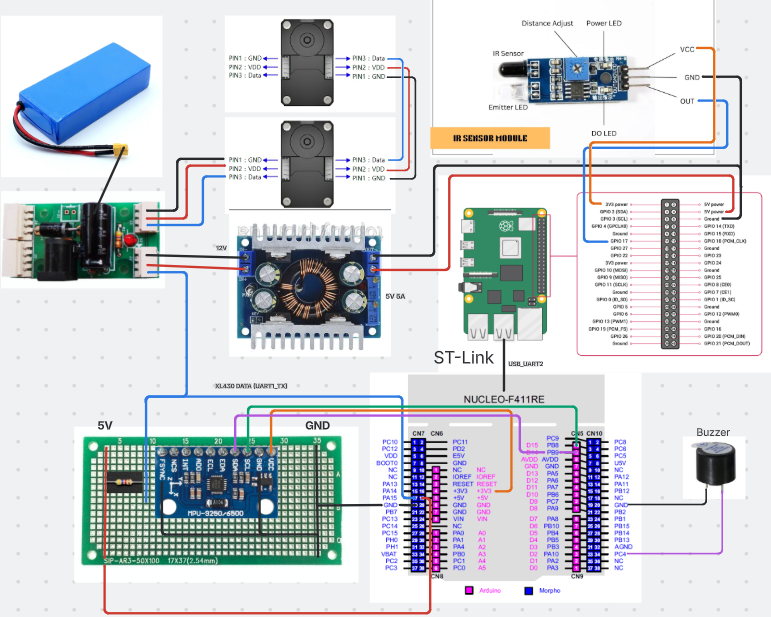

바퀴 제어와 명령 보호
선속도·각속도를 좌우 바퀴 속도로 변환하고 엔코더 피드백을 수집합니다. 상대 펄스 이동은 정지 확인 → 위치 이동 → 속도 모드 복귀 순서로 처리하며, 요청 ID로 중복 실행을 방지합니다.
PROJECT / MY ROLE
자동화 공정의 운반·적재를 위한
STM32 기반 주행로봇 펌웨어
상위 ROS 2 명령을 실제 바퀴 구동으로 연결하고, 엔코더·IMU 데이터를 다시 전달하는 제어 계층을 구현했습니다.
하드웨어 연결, 바퀴 모터 제어, IMU 읽기·보정·자세 추정, MCU와 ROS 2 간 통신 및 오류 복구.
운반용 버거는 바퀴·IMU·부저를 연결하고, 창고 적재용 와플은 리니어 모터를 추가해 승강 동작을 제어합니다.
시뮬레이션은 팀 공정 설명용 데모입니다.
창고 적재를 위한 승강 제어
명령 수신 → 구동 제어 → 상태 피드백 → 오류 복구
01 / 03핵심 구현과 안정성
선속도·각속도를 좌우 바퀴 속도로 변환하고 엔코더 피드백을 수집합니다. 상대 펄스 이동은 정지 확인 → 위치 이동 → 속도 모드 복귀 순서로 처리하며, 요청 ID로 중복 실행을 방지합니다.
I²C로 가속도·각속도를 읽고, 유효 샘플 512개로 자이로 바이어스를 계산합니다. 6축 Madgwick 필터에 실제 샘플 간격을 반영하고, 250 ms를 넘는 공백은 적분에서 제외합니다.
명령 수신, 모터 I/O와 센서 발행을 애플리케이션 루프에 통합했습니다. Agent 연결 상실 시 명령을 폐기하고 정지·토크 해제를 요청하며, 재연결 후에도 새 활성화 명령을 기다립니다.

연결 이상 감지 → 대기 명령 폐기·정지 요청 → 세션 재생성·시간 동기화. 새 활성화·주행 명령을 기다려 이전 명령의 재실행을 방지했습니다.
전압 10개 샘플 평균을 사용합니다. 평균 전압이 11.0 V 미만으로 6초간 유지되면 경보를 시작하고, 11.3 V 이상으로 3초간 유지되면 해제합니다. 부저는 2초마다 0.5초 울립니다.
음향 경보 기능으로, 배터리 차단 기능과는 구분됩니다.실제 주행에서 발견한 문제와 개선
회전 명령에 늦게 반응하고 목표 각도에 도달하기 전에 멈췄습니다. 정지 후에는 바퀴 상태 데이터 수신도 끊겼습니다.
엔코더로 계산한 회전각과 IMU로 측정한 차체 회전각은 비슷했습니다. 상태 전송과 모터 제어가 같은 작업에서 실행되는 구조를 확인하고, 통신 대기가 제어에 미치는 영향을 조사했습니다.
7개 상태 토픽의 reliable 발행이 통신 대기를 만들 수 있었습니다. 좌우 바퀴 상태 2개는 유지하고, 나머지 5개는 get_drive_state 요청형 서비스로 통합했습니다.
후속 측정에서 바퀴 데이터는 약 1.2초 끊겼지만 IMU는 계속 수신됐습니다. joint_states를 best effort로 바꾸고, 설정 주기 100 ms와 기존 브리지는 유지했습니다.
읽기 실패가 바퀴 피드백 공백으로 이어지는 경로를 확인했습니다. 별도 sleep 없이 단계적으로 재시도하며, 대기 중에도 명령 처리·정지 감시를 수행합니다.
상태 발행과 재시도 구조를 개선한 뒤, 통신 속도도 상향했습니다. 제어 로직뿐 아니라 전송 대역폭까지 함께 점검했습니다.
개선 사항을 적용한 뒤 실제 로봇에서 동작을 확인했습니다. 센서별 수신 간격과 제어·통신의 실행 경로를 비교해 지연 원인을 단계적으로 좁혔습니다.